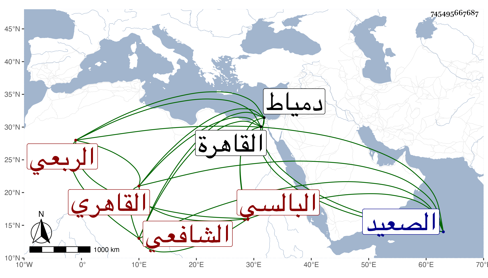

0902Sakhawi.DawLamic.ITO20230111-ara1.EIS1600.745495667687
Biography ID: 745495667687
56
محمد بن محمد بن محمود بن محمد بن أبي الحسين بن محمود بن أبي الحسين البهاء بن الشمس بن الجمال أبي الثناء الربعي البالسي الأصل القاهري الشافعي الماضي ابنه أحمد وأخوه عبد الرحيم والآتي أبوهما وهو سبط السراج بن الملقن . ولد في ربيع الأول سنة ثمان وثمانين وسبعمائة بالقاهرة ونشأ بها فحفظ القرآن وتلا به لأبي عمرو علي الشمس السعودي الضرير فقيهنا والعمدة والمنهاج الفرعي وألفية ابن ملك ، وعرض على جماعة ، واشتغل بالفقه على البرهاني البيجوري والشمس البرشنسي والمجد البرماوي وتزوج ابنته وعليه قرأ في النحو أيضا وسمع على جده لأمه جزء القدوري وغيره وعلى التنوخي جزء أبي الجهم وحدث بذلك سمع منه الفضلاء أخذتهما عنه ، وناب في القضاء للجلال البلقيني فمن بعده بل باشر في عدة جهات تلقاها عن أبيه وغيره وسافر إلى دمياط وبلاد الصعيد وكان أصيلا ساكنا . مات في يوم الاثنين ثالث جمادى الأولى سنة تسع وخمسين ودفن عند والده بالقرب من البلالي من حوش سعيد السعداء رحمه الله وإيانا .
